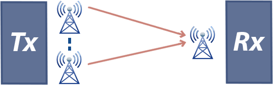
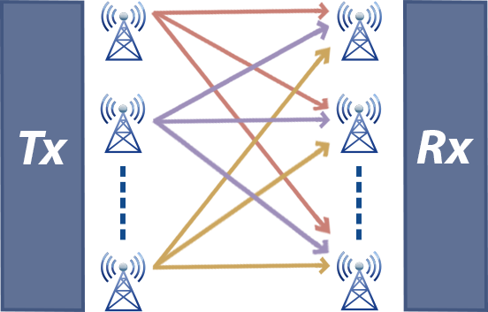

<!DOCTYPE html>
<html lang="zxx">

<head>
    <meta charset="utf-8">
    <title>Gaurav Kansal Blog</title>
    <!-- mobile responsive meta -->
    <meta name="viewport" content="width=device-width, initial-scale=1">
    <meta name="viewport" content="width=device-width, initial-scale=1, maximum-scale=1">

    <!-- ** Plugins Needed for the Project ** -->
    <!-- Bootstrap -->
    <link rel="stylesheet" href="../../plugins/bootstrap/bootstrap.min.css">
    <!-- slick slider -->
    <link rel="stylesheet" href="../../plugins/slick/slick.css">
    <!-- themefy-icon -->
    <link rel="stylesheet" href="../../plugins/themify-icons/themify-icons.css">
    <!-- Main Stylesheet -->
    <link href="../../css/style.css" rel="stylesheet">
    <!--Favicon-->
    <link rel="shortcut icon" href="../../images/favicon.ico" type="image/x-icon">
    <link rel="icon" type="image/png" href="../../images/favicon.jpg">
    <link href="../../css/fontawesome/css/all.min.css" rel="stylesheet" />
</head>

<body>
    <!-- preloader -->
    <div class="preloader">
        <div class="loader">
            <span class="dot"></span>
            <div class="dots">
                <span></span>
                <span></span>
                <span></span>
            </div>
        </div>
    </div>
    <!-- /preloader -->

    <div class="navigation" id="myHead"></div>

    <!-- page-title -->
    <section class="section bg-secondary">
        <div class="container-fluid">
            <div class="row">
                <div class="col-lg-12">
                    <h4>
                        Multiple Input Multiple Output (MIMO)
                    </h4>
                </div>
            </div>
        </div>
    </section>
    <!-- /page-title -->

    <!--Main content-->
    <section class="mt-1" id="blog-post-block">
        <div class="card mb-2">
            <div class="container-fluid">
                <div class="row">
                    <!-- blog post -->
                    <div class="col-lg-12">
                        <div class="card-block">
                            <ul class="list-inline d-flex justify-content-between py-3">
                                <li class="list-inline-item"><i class="ti-user mr-2"></i> Post by <a
                                        href="https://www.gauravkansal.in/index.html">Gaurav Kansal</a></li>
                                <li class="list-inline-item"><i class="ti-calendar mr-2"></i> September 01, 2020</li>
                            </ul>
                            <div class="content">
                                <p class="blog-post-body">
                                    Multiple Input Multiple Output (MIMO)
                                </p>
                                <div class="mt-5 mb-5">
                                    <h6><u>Introduction: </u></h6>
                                    <p>IEEE-802.11n wireless standard uses multiple antennas for high data
                                        transmission<sup><a onclick="linkfiles('link1')">[1]</a></sup>. 802.11n standard was published in October 2009 by IEEE<sup><a onclick="linkfiles('link2')">[2]</a></sup>. 802.11n
                                        is also known as MIMO (multiple input multiple output) pronounced as My-Mo<sup><a onclick="linkfiles('link3')">[3]</a></sup>.
                                    </p>
                                    <p>Multiple-Input Multiple-Output (MIMO) technology is a wireless technology that
                                        uses multiple transmitters (output) and multiple receivers (input) to transfer
                                        more data at the same time.</p>
                                    <p>MIMO allows single radio channel to transmit and receive more than one data
                                        signal simultaneously<sup><a onclick="linkfiles('link4')">[4]</a></sup>. MIMO transmits different signals over individual
                                        antennas which are subjected to different coding, delay, amplitude and phase
                                        control during processing<sup><a onclick="linkfiles('link5')">[5]</a></sup>.The antennas at each end of the communication
                                        circuits are combined to minimize errors and optimize data speed.</p>
                                    
                                    <h6 class="text-center"><u>Fig-1</u></h6>
                                    <p><u>Fig-1 shows the basic block diagram of MIMO</u></p>
                                </div>
                                <div class="mt-5 mb-5">
                                    <h6><u>What led to evolution of MIMO? </u></h6>
                                    <p>The main reason for the evolution of MIMO technology is Multipath interference.
                                        Multipath becomes the boon for the evolution of MIMO. Previously, these multiple
                                        paths only served to introduce interference. By using MIMO, these additional
                                        paths can be used to increase the capacity of a link. MIMO utilizes the
                                        multipath signals for the better reception. MIMO increases receiver signal
                                        capturing power by enabling multiple antennas to combine data streams from
                                        different paths (multipath) and at different times<sup><a onclick="linkfiles('link6')">[6]</a></sup>.</p>
                                </div>
                              <div class="mt-5 mb-5">
                                    <h6>What is Multipath?</h6>
                                    <p>In conventional systems/legacy devices, single transmitter and single receiver
                                        were used (SISO). In this scenario, there is no line of sight between
                                        transmitter and receiver so signal reach receiver after bouncing from obstacles.
                                        So, signal takes multipath. When transmitter sends the data; it spreads out in
                                        all directions and reach the receiver from different paths (multipath) after
                                        getting bounced from walls, ceilings and other obstacles. If the received data
                                        is out- of-sync then they will cancel out each other and null (or no signal)
                                        will be received by receiver for processing. This effect is known as Multipath
                                        interference.</p>
                                    <blockquote><span style="color: #d58753;">To take benefit of MIMO, both the station
                                            (client device) and access point must have multiple transceivers<sup><a onclick="linkfiles('link7')">[7]</a></sup>
                                            (transmitters and receivers).</span>
                                    </blockquote>
                                    <h6><u>Various Antenna technologies:</u></h6>
                                    <ol>
                                        <li>SISO (Single input single output)</li>
                                        <li>SIMO (Single input multiple output)</li>
                                        <li>MISO (Multiple input single output)</li>
                                        <li>MIMO (Multiple input multiple output)</li>
                                    </ol>
                                    <h6>SISO - (Single input single output):</h6>
                                    <p>The simplest form of radio link which can be defined in MIMO term is SISO. SISO
                                        (single input, single output) refers to a wireless communications system in
                                        which one antenna is used at the source (transmitter) and one antenna is used at
                                        the destination (receiver). SISO requires no processing in terms of the various
                                        forms of diversity that may be used. However, the SISO channel is limited in its
                                        performance as interference and fading will impact the system more than a MIMO
                                        system using some form of diversity. </p>
                                    
                                    <h6 class="text-center"><u>Fig-2</u></h6>
                                    <blockquote><span style="color: #d58753;">Diversity refers to the method to improve
                                            the reliability of signal using various methods.</span>
                                    </blockquote>
                                    <h6><u>Some of the diversity schemes are<sup><a onclick="linkfiles('link8')">[8]</a></sup>:</u></h6>
                                    <ol class="list-type-li">
                                        <li>Time Diversity</li>
                                        <li>Frequency Diversity</li>
                                        <li>Space Diversity/Antenna Diversity</li>
                                        <li>Polarization Diversity</li>
                                    </ol>
                                    We will focus on Space diversity or antenna diversity only.
                                    <blockquote><span style="color: #d58753;"><b>Antenna diversity</b> used to mitigate
                                            the multipath interference. Antenna diversity is also known as spatial
                                            diversity or space diversity or switched diversity. It is used to improve
                                            the reliability and quality of link.
                                            Antenna diversity is used in SIMO and MISO techniques. SIMO and MISO are
                                            known as smart antenna techniques or antenna arrays. Antenna array is
                                            nothing but the collection of antennas. Usually base station or transmitter
                                            have multiple antenna or antenna arrays as there is more space on the base
                                            station to deploy it<sup><a onclick="linkfiles('link9')">[9]</a></sup>.
                                        </span>
                                    </blockquote>
                                </div>
                                <div class="mt-5 mb-5">
                                    <h6>SIMO - (Single Input Multiple Output):</h6>
                                    <p>In SIMO single transmitter and multiple or more than one receiver are used. When
                                        the multiple signals received from multiple paths at the receiver then one
                                        antenna may receive the strong signal compared to other antennas and hence
                                        signal will be processed. This technique is used to combat fading. Here only one
                                        antenna will remain active or only one antenna will process the data. This is
                                        also known as receiving diversity<sup><a onclick="linkfiles('link10')">[10]</a></sup>. It has one disadvantage that processing is
                                        required at the receiver side.</p>
                                    
                                    <h6 class="text-center"><u>Fig-3</u></h6>
                                </div>
                                <div class="mt-5 mb-5">
                                    <h6>MISO - (Multiple Input Single Output):</h6>
                                    <p>In MISO multiple transmitters and single receiver is used. When multiple signals
                                        sent from transmitter and reached at receiver then receiver will receive the
                                        multiple copies of same data from each transmitter and process the optimum data.
                                        This is known as transmit diversity<sup><a onclick="linkfiles('link11')">[11]</a></sup>. Processing of the signal is done at the
                                        transmitter side only. It is used in downlink transmission.</p>
                                    
                                    <h6 class="text-center"><u>Fig-4</u></h6>
                                </div>
                                <div class="mt-5 mb-5">
                                    <h6>MIMO - (Multiple Input Multiple Output):</h6>
                                    <p>MIMO explore multipath propagation using different transmission paths to
                                        receiver. MIMO is effectively a radio antenna technology as it uses multiple
                                        antennas at the transmitter and receiver to enable a variety of signal paths to
                                        carry the data, choosing separate paths for each antenna to enable multiple
                                        signal paths to be used.</p>
                                    
                                    <h6 class="text-center"><u>Fig-5</u></h6>
                                    <p>MIMO have multiple transmitters and multiple receivers.</p>
                                    <p>MIMO terminology defined as (MxN:O) that can be read as - M i.e., first digit
                                        defines number of transmitters, N i.e., second digit defines number of receivers
                                        and O i.e., last digit defines the number of spatial streams (which is explained
                                        later).</p>
                                <h6><u>The two main formats for MIMO are<sup><a onclick="linkfiles('link12')">[12]</a></sup>-</u></h6>
                                <p><b>A. Spatial diversity/Antenna diversity - </b>Spatial diversity is often referred as 
                                    transmit and receive diversity used in MISO and SIMO systems. Existence of 
                                    multiple antennas in a system means existence of different propagation paths. 
                                    Aiming at improving the reliability of the system, same data is sent across the 
                                    different propagation (spatial) paths. This is called spatial diversity. It is also 
                                    known as switched diversity because antenna with high SNR becomes active 
                                    and processes the data.</p>
                                <p><b>B. Spatial multiplexing - </b>Aiming at improving the data rate of the system, 
                                    we may choose to place different portions of the data on different propagation 
                                    paths. This is called spatial multiplexing. The data chunks received at 
                                    receivers are multiplexed or added to increase the data capacity.</p>
                                <blockquote><span style="color: #d58753;">Spatial Streams plays a crucial role in MIMO.
                                    </span>
                                </blockquote>
                                </div>
                                <div class="mt-5 mb-5">
                                    <h6>What is spatial stream?</h6>
                                    <p>The source data is split into two or more independent data streams that are 
                                        transmitted over multiple antennas, are called spatial streams<sup><a onclick="linkfiles('link13')">[13]</a></sup>. Spatial 
                                        streaming is primarily observed in wireless communications where multiple-input-multiple-output (MIMO) is being used. In a MIMO environment, the 
                                        signal is being transmitted by the various antennas and are multiplexed by 
                                        using different spaces within the same spectral channel. These spaces are 
                                        known as spatial streams or in simple words we can explain it as it is a data 
                                        that has been broken up and sent at the same time over wireless. Wi-Fi is a 
                                        half-duplex connection, which basically means a device, can either send or 
                                        receive but not both at the same time. To speed up throughput 802.11n uses 
                                        multiple radios to send chunks of data at the same time.</p>
                                    <p>In MIMO, each spatial stream is transmitted from a different radio/antenna 
                                        chain in the same frequency channel. The receiver receives each stream on 
                                        each of its identical antenna/radio chain.</p>
                                    <p>As the receiver knows the phase offset of its own antennas, it can use the 
                                        signal processing techniques to mathematically reconstruct the original 
                                        stream.</p>
                                <blockquote><span style="color: #d58753;">Beam-forming can enhance the MIMO.
                                    </span>
                                </blockquote>
                                </div>
                                <div class="mt-5 mb-5">
                                    <h6>BEAMFORMING –</h6>
                                    <p>Beam forming means pointing antenna array (or group 
                                        of antennas’) for shaping the beam towards a particular direction i.e. to focus 
                                        the energy or beam towards particular physical location especially towards 
                                        client device. Concentrating the energy/signal in one direction improves 
                                        signal to noise ratio and transmit speed.</p>
                                    <p>For reducing the interference and for improving the reliability of wireless 
                                        network, 802.11n and 802.11ac comes with an advanced technology called 
                                        beamforming.</p>
                                    <p>Beamforming transmit the data in the given direction of the client instead of 
                                        radiating in all directions. The best example is laser which can deliver the data 
                                        towards the specific device only while old wireless standards is like a light 
                                        bulb which spreads the light in whole set of area.</p>
                                    <p>To give stronger signal to a specific device, a beamformer (transmitter) 
                                        changes the phase and relative amplitude of the signal.</p>
                                <blockquote><span style="color: #d58753;"><b>Now the question arises how to gather the location of client for beam 
                                    forming?</b>
                                    <p>By the mathematical procedure called channel calibration or channel sounding 
                                        procedure the physical location of client can be tracked.</p>
                                    </span>
                                </blockquote>
                                <h6><u>How Beam forming work?</u></h6>
                                <p>It’s a channel sounding procedure in which a transmitter send a NDP (null 
                                    data packet) announcement frame to the receiver and then the client device 
                                    responds with a matrix indicating how well it heard the signal from each 
                                    antenna. Based on this matrix data, the AP can compute the relative position 
                                    of the client device, and the phase offsets on each of its antennas are required 
                                    to maximize constructive interference at the client device. So, in this way the 
                                    strong signal can be given in right direction and signal will be weaker in other 
                                    direction, which is the way to use of energy in an efficient way.</p>
                                    <h6><u>Types of MIMO systems<sup><a onclick="linkfiles('link14')">[14]</a></sup>:</u></h6>
                                    <ol class="list-type-li">
                                        <li>SU-MIMO (Single user MIMO)</li>
                                        <li>MU-MIMO (Multi user MIMO)</li>
                                    </ol>
                                    <p><b>SU-MIMO – </b> As the name suggest, Single user-MIMO i.e. multiple streams 
                                        of data is sent or received between just one client at the time. Single user 
                                        MIMO requires both the transmitting and receiving device support the MIMO 
                                        technology, along with having multiple antennas. The multiple antennas add
                                        cost, weight, and size to the wireless devices and the processing of the MIMO 
                                        signals requires more resources as well.</p>
                                    <p><b>MU-MIMO – </b>Multi User MIMO released in a second wave (or wave-2) of 
                                        802.11ac wireless standard. As the name suggest, multiple streams of data are
                                        sent or received between multiple clients at the same time. MU-MIMO is one 
                                        step further in MIMO technology, which enables multiple independent radio 
                                        terminals to access a system, which can provide significant performance gains 
                                        over the original MIMO technology. MIMO provides the facility to multiple 
                                        user to connect and access over the same channel simultaneously with some 
                                        spatial degree of freedom and by adding more antennas/radios, it can control 
                                        the phased antenna pattern to control both the areas of maximum constructive 
                                        interference -- where the signal is the strongest -- and maximum destructive 
                                        interference --where the signal is the weakest. With a sufficient number of 
                                        antennas and knowledge about the relative positions of all associated client 
                                        devices, it can actually create a phased pattern to talk to multiple clients both 
                                        independently and simultaneously.</p>
                                    <h6>Summary:</h6>
                                    <h6><u>How does MIMO work - </u></h6>
                                    <ol>
                                        <li>The AP broadcast a sounding frame</li>
                                        <li>Each MU-MIMO supportable device transmit back matrix data to access 
                                            point</li>
                                        <li> The AP computes the relative position of client and make a group of client 
                                            device to communicate simultaneously</li>
                                        <li> The AP computes the phase offset for each data stream for each client in 
                                            group and then transmits all data stream in group</li>
                                        <li>The AP sends acknowledge block request to each client in group to know 
                                            the confirmation to whether the client has received the data stream or not </li>
                                        <li>Then each client will send the block acknowledge as confirmation</li>
                                    </ol>
                                </div>


                                <h6><u>References:</u></h6>
                                <ol class="refLi">
                                    <li id="link1"><a class="openLink" onclick="linkOpen('https://en.wikipedia.org/wiki/IEEE_802.11n-2009')">https://en.wikipedia.org/wiki/IEEE_802.11n-2009</a>
                                    </li>
                                    <li id="link2"><a class="openLink" onclick="linkOpen('https://en.wikipedia.org/wiki/IEEE_802.11#802.11n')">https://en.wikipedia.org/wiki/IEEE_802.11#802.11n</a>
                                    </li>
                                    <li id="link3"><a class="openLink" onclick="linkOpen('http://www.yourdictionary.com/mimo')">http://www.yourdictionary.com/mimo</a>
                                    </li>
                                    <li id="link4"><a class="openLink" onclick="linkOpen('https://en.wikipedia.org/wiki/MIMO')">https://en.wikipedia.org/wiki/MIMO</a>
                                    </li>
                                    <li id="link5"><a class="openLink" onclick="linkOpen('https://cdn.rohdeschwarz.com/pws/dl_downloads/dl_application/application_notes/1ma179/1MA179_10e_WLAN80211n_from_SISO_to_MIMO.pdf')">https://cdn.rohdeschwarz.com/pws/dl_downloads/dl_application/application_notes/1ma179/1MA179_10e
                                        _WLAN80211n_from_SISO_to_MIMO.pdf</a>
                                    </li>
                                    <li id="link6"><a class="openLink" onclick="linkOpen('http://www.intel.com/content/www/us/en/support/network-and-i-o/wireless-networking/000005714.html')">http://www.intel.com/content/www/us/en/support/network-and-i-o/wireless-networking/000005714.html</a>
                                    </li>
                                    <li id="link7"><a class="openLink" onclick="linkOpen('http://www.intel.com/content/www/us/en/support/network-and-i-o/wireless-networking/000005714.html')">http://www.intel.com/content/www/us/en/support/network-and-i-o/wireless-networking/000005714.html</a>
                                    </li>
                                    
                                    <li id="link8"><a class="openLink" onclick="linkOpen('https://en.wikipedia.org/wiki/Diversity_scheme')">https://en.wikipedia.org/wiki/Diversity_scheme</a>
                                    </li>
                                    <li id="link9"><a class="openLink" onclick="linkOpen('http://www.lait.fe.uni-lj.si/Clanki/2008/120043484.pdf')">http://www.lait.fe.uni-lj.si/Clanki/2008/120043484.pdf</a>
                                    </li>
                                    <li id="link10"><a class="openLink" onclick="linkOpen('http://tec.gov.in/pdf/Studypaper/Test%20Procedure%20EM%20Fields%20From%20BTS%20Antennae.pdf')">http://tec.gov.in/pdf/Studypaper/Test%20Procedure%20EM%20Fields%20From%20BTS%20Antennae.pdf</a>
                                    </li>
                                    <li id="link11"><a class="openLink" onclick="linkOpen('http://tec.gov.in/pdf/Studypaper/Test%20Procedure%20EM%20Fields%20From%20BTS%20Antennae.pdf')">http://tec.gov.in/pdf/Studypaper/Test%20Procedure%20EM%20Fields%20From%20BTS%20Antennae.pdf</a>
                                    </li>
                                    <li id="link12"><a class="openLink" onclick="linkOpen('http://tec.gov.in/pdf/Studypaper/Test%20Procedure%20EM%20Fields%20From%20BTS%20Antennae.pdf')">http://tec.gov.in/pdf/Studypaper/Test%20Procedure%20EM%20Fields%20From%20BTS%20Antennae.pdf</a>
                                    </li>
                                    <li id="link13"><a class="openLink" onclick="linkOpen('https://meraki.cisco.com/blog/2011/02/mimo-why-multiple-antennas-matter/')">https://meraki.cisco.com/blog/2011/02/mimo-why-multiple-antennas-matter/</a>
                                    </li>
                                    <li id="link14"><a class="openLink" onclick="linkOpen('https://www.edgefx.in/multiple-input-and-multiple-output-mimo-wireless-communications/')"> https://www.edgefx.in/multiple-input-and-multiple-output-mimo-wireless-communications/</a>
                                    </li>

                                    <li id="link15"><a class="openLink" onclick="linkOpen('https://www.edgefx.in/multiple-input-and-multiple-output-mimo-wireless-communications/')">https://www.edgefx.in/multiple-input-and-multiple-output-mimo-wireless-communications/
                                    </a>
                                    </li>
                                    <li id="link16"><a class="openLink" onclick="linkOpen('https://en.wikipedia.org/wiki/Multi-user_MIMO')">https://en.wikipedia.org/wiki/Multi-user_MIMO
                                    </a>
                                    </li>
                                    <li id="link17"><a class="openLink" onclick="linkOpen('http://www.digitalairwireless.com/wireless-blog/t-80211n/transmit-beamforming-txbf-explained.html')">http://www.digitalairwireless.com/wireless-blog/t-80211n/transmit-beamforming-txbf-explained.html
                                    </a>
                                    </li>
                                    <li id="link18"><a class="openLink" onclick="linkOpen('https://www.dfn.de/fileadmin/3Beratung/Betriebstagungen/bt46/forummobileITDemystifyingreinders.pdf')">https://www.dfn.de/fileadmin/3Beratung/Betriebstagungen/bt46/forummobileITDemystifyingreinders.pdf
                                    </a>
                                    </li>
                                    <li id="link19"><a class="openLink" onclick="linkOpen('http://www.l-com.com/content/Article.aspx?Type=N&ID=10202')">http://www.l-com.com/content/Article.aspx?Type=N&ID=10202</a>
                                    </li>
                                    <li id="link20"><a class="openLink" onclick="linkOpen('https://www.telcoantennas.com.au/site/how-does-mimo-work')">https://www.telcoantennas.com.au/site/how-does-mimo-work</a>
                                    </li>
                                    <li id="link21"><a class="openLink" onclick="linkOpen('https://www.lifewire.com/mimo-wifi-routers-818332')">https://www.lifewire.com/mimo-wifi-routers-818332
                                    </a>
                                    </li>
                                    <li id="link22"><a class="openLink" onclick="linkOpen('http://searchmobilecomputing.techtarget.com/definition/MIMO')">http://searchmobilecomputing.techtarget.com/definition/MIMO</a>
                                    </li>
                                    <li id="link23"><a class="openLink" onclick="linkOpen('http://www.radio-electronics.com/info/antennas/mimo/multiple-input-multiple-output-technology-tutorial.php')">http://www.radio-electronics.com/info/antennas/mimo/multiple-input-multiple-output-technologytutorial.php</a>
                                    </li>
                                    <li id="link24"><a class="openLink" onclick="linkOpen('https://jinone.wordpress.com/sistem-komunikasi-bergerak/3g-lte-basics-tutorial/mimo-basics-tutorial/')">https://jinone.wordpress.com/sistem-komunikasi-bergerak/3g-lte-basics-tutorial/mimo-basics-tutorial/</a>
                                    </li>
                                </ol>
                            </div>

                            <div class="labelList">
                                <div class="labelIcon"><i class="fa-solid fa-tags"></i></div>
                                <div class="labelText">WiFi</div>
                            </div>

                            <div class="pagination blogPagination my-4">
                                <div class="paginationNav pull-right">

                                    <a href="../../2021/07/identity-psk-ipsk.html" title="Previous" rel=""
                                        class="preblog">
                                        <div class="prebox"> <span><i class="fa fa-angle-left fa-lg"></i> </span>
                                            Previous </div>
                                        <p class="pretitle">Identity PSK ( iPSK) </p>

                                    </a>
                                    <a href="../08/common-terms-used-in-wireless.html" title="Next" rel=""
                                        class="nextblog">
                                        <div class="nextbox">Next<span><i class="fa fa-angle-right fa-lg"></i></span>
                                        </div>
                                        <p class="nexttitle"> Common terms used in Wireless Communications</p>
                                    </a>
                                </div>
                            </div>


                            <div id="disqus_thread"></div>
                        </div>

                        <!-- /blog post -->
                    </div>
                </div>
            </div>
        </div>
    </section>
    <!-- /Main content -->

    <div id="showsidebar"></div>
    <div class="bg-secondary footer-bg" id="myFooter"></div>

    <div class="progress-wrap">
        <svg class="progress-circle svg-content" width="100%" height="100%" viewBox="-1 -1 102 102">
            <path d="M50,1 a49,49 0 0,1 0,98 a49,49 0 0,1 0,-98" />
        </svg>
    </div>


    <!-- jQuery -->
    <script src="../../plugins/jQuery/jquery.min.js" crossorigin="anonymous"></script>
    <script>
        $('#myHead').load('../../include/header.html');
        $(document).ready(function () {
            $("#skipnone").remove();
        });
        $('#myFooter').load('../../include/footer.html');
        $('#showsidebar').load('../../include/sidebarShow.html');
    </script>
    <script>
        var geturl = window.location.href;
        // console.log(geturl);
        var disqus_config = function () {
            this.page.url = geturl;  // Replace PAGE_URL with your page's canonical URL variable
            this.page.identifier = geturl; // Replace PAGE_IDENTIFIER with your page's unique identifier variable
        };

        (function () { // DON'T EDIT BELOW THIS LINE
            var d = document, s = d.createElement('script');
            s.src = 'https://gauravkansal-in.disqus.com/embed.js';
            s.setAttribute('data-timestamp', +new Date());
            (d.head || d.body).appendChild(s);
        })();
    </script>
    <noscript>Please enable JavaScript to view the <a href="https://disqus.com/?ref_noscript">comments powered by
            Disqus.</a></noscript>

    <!-- Bootstrap JS -->
    <script src="../../plugins/bootstrap/bootstrap.bundle.min.js"></script>
    <!-- slick slider -->
    <script src="../../plugins/slick/slick.min.js"></script>
    <!-- masonry -->
    <script src="../../plugins/masonry/masonry.js"></script>
    <!-- headroom -->
    <script src="../../plugins/headroom/headroom.js"></script>
    <!-- reading time -->
    <script src="../../plugins/reading-time/readingTime.min.js"></script>

    <!-- Main Script -->
    <script src="../../js/script.js"></script>

</body>

</html>